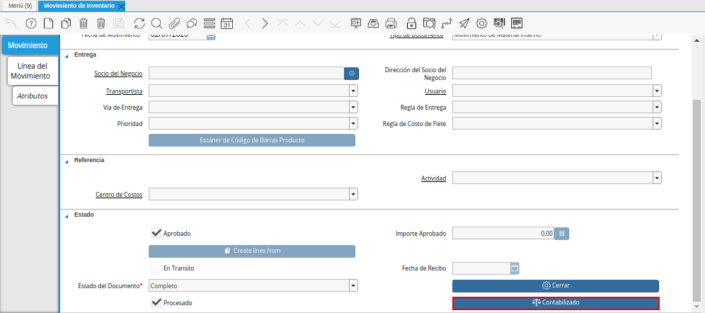

Proceso de Inventario¶
Inventario Físico¶
Realice el procedimiento regular para generar un inventario físico en ADempiere, el mismo es explicado en el documento Registro de Inventario Físico, elaborado por ERPyA.
Luego de que el documento de inventario físico se encuentre en estado “Completo”, seleccione la opción “Contabilizado”, ubicada en la parte inferior de la ventana “Inventario Físico”.
Imagen 1. Opción Contabilizado de la Ventana Inventario Físico

Podrá visualizar el asiento contable generado por la transacción anteriormente realizada en la ventana “Inventario Físico”.
Imagen 2. Asiento Contable de la Ventana Inventario Físico

Inventario Uso Interno¶
Realice el procedimiento regular para generar un inventario de uso interno en ADempiere, el mismo es explicado en el documento Registo de Inventario de Uso Interno, elaborado por ERPyA.
Luego de que el documento de inventario de uso interno se encuentre en estado “Completo”, seleccione la opción “Contabilizado”, ubicada en la parte inferior de la ventana “Inventario Uso Interno”.
Imagen 3. Opción Contabilizado de la Ventana Inventario Uso Interno

Podrá visualizar el asiento contable generado por la transacción anteriormente realizada en la ventana “Inventario Uso Interno”.
Imagen 4. Asiento Contable de la Ventana Inventario Uso Interno

Movimiento de Inventario¶
Realice el procedimiento regular para generar un movimiento de inventario en ADempiere, el mismo es explicado en el documento Registro de Movimiento de Inventario, elaborado por ERPyA.
Luego de que el documento de movimiento de inventario se encuentre en estado “Completo”, seleccione la opción “Contabilizado”, ubicada en la parte inferior de la ventana “Movimiento de Inventario”.

Imagen 5. Opción Contabilizado de la Ventana Movimiento de Inventario
Podrá visualizar el asiento contable generado por la transacción anteriormente realizada en la ventana “Movimiento de Inventario”.
Imagen 6. Asiento Contable de la Ventana Movimiento de Inventario

Producción¶
Realice el procedimiento regular para generar una producción en ADempiere, el mismo es explicado en el documento Producción, elaborado por ERPyA.
Luego de que el documento de producción se encuentre en estado “Completo”, seleccione la opción “Contabilizado”, ubicada en la parte inferior de la ventana “Producción”.
Imagen 7. Opción Contabilizado de la Ventana Producción

Podrá visualizar el asiento contable generado por la transacción anteriormente realizada en la ventana “Producción”.
Imagen 8. Asiento Contable de la Ventana Producción